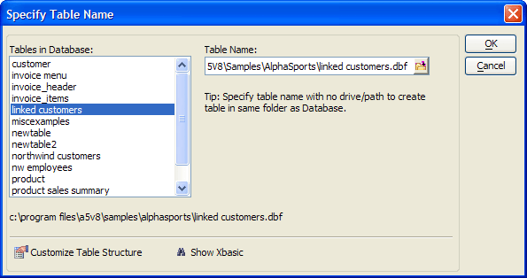

Specify Table Name Dialog
When the Specify Table Name dialog appears, click
 in the Table Name control to define the name of the target
table. This may be an existing table or a new table. To specify a table
in the current database, do not specify a drive or path.
in the Table Name control to define the name of the target
table. This may be an existing table or a new table. To specify a table
in the current database, do not specify a drive or path.

If the Show Xbasic button appears, you may click it to view and copy the Xbasic code that will create the table.
If the Customize Table Structure button appears:
Optionally, click Customize Table Structure to display the Customize Field Definitions dialog.
There are 3 options that you may enable:
Size all character fields to fit the data in the field
Convert all time fields to date fields
Override field definitions of selected fields
If you enable Override field definitions of selected fields, click Field Definitions to display the Override Field Definitions dialog.
Click OK to continue.
Click OK to create the table.
See Also